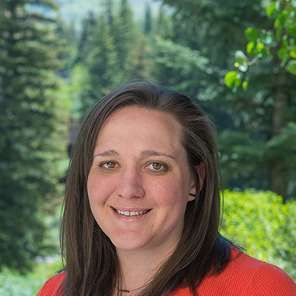

About Me
Driven and dedicated DIGITAL MARKETING PROFESSIONAL with strong analytical and design skills, and a passion for working with nonprofits. With 10+ years of experience in digital marketing strategy, public messaging, and graphic design, my next step on a journey of lifelong learning is to become a full-stack web developer through University of Denver Woment's Coding Boot Camp. Known to thrive in rapidly evolving work environment that present new and different challenges, I've spent my career seeking out new opportunities to grow my skillsets and my perspective at nonprofit organizations across the U.S.
As a digital marketer, I am dedicated to creating and marketing content that is meaningful and data or research-driven. For example, I use personas, or stakeholder profiles, to inform and guide our digital and print content. These personas serve as baseline profiles, which we continually seek to update and revise as we reach new audiences or gain new insights.
I am committed to developing and implementing digital marketing strategies that drive meaningful user engagement. This means I do more than simply create and distribute content. I map pathways of engagement across supporter bases and, subsequently, develop meaningful ladders of engagement to better understand current audiences and potential areas for growth.
I am available for copy writing and editing, CRM setup, email templating, design and web development. I work with clients of all sizes and industries.
I belive in technology should be accessible to everyone, the power of good, dogs, rivers, and Wisconsin.